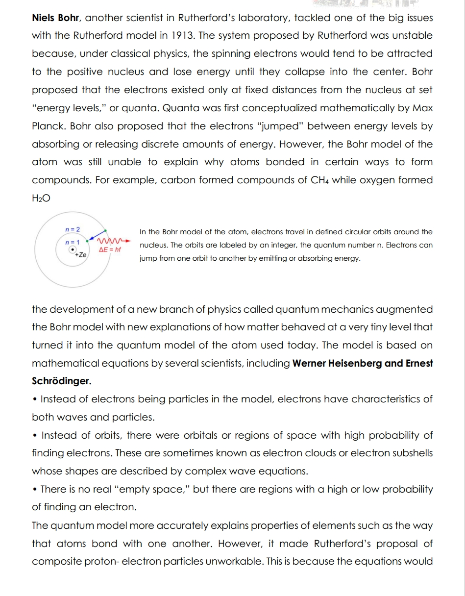
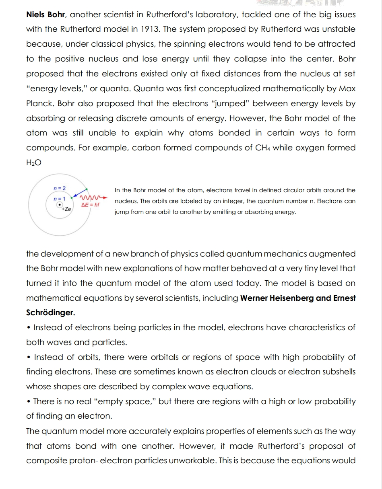

DISCUSSION OF THE TOPIC: Atomos, Aristotle and Alchemy (Chemistry Before Modern History) Leucippus and Democritus were two of the most important theorists about the natural and physical world. They were called physicists in Ancient Greece. They considered
 
